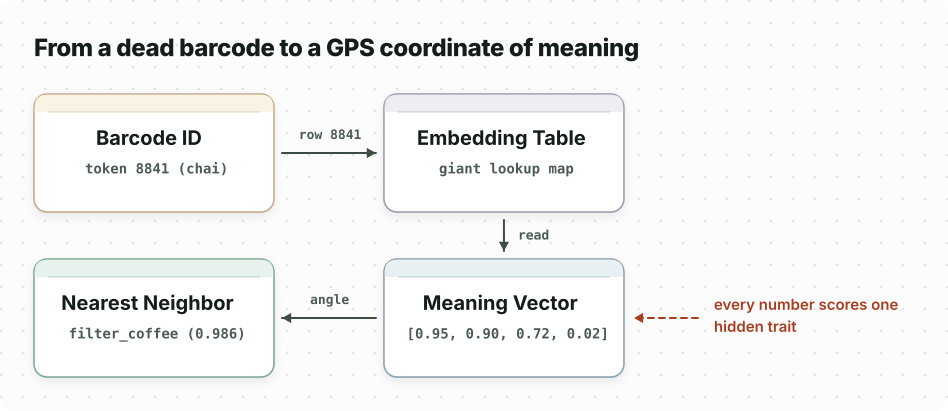
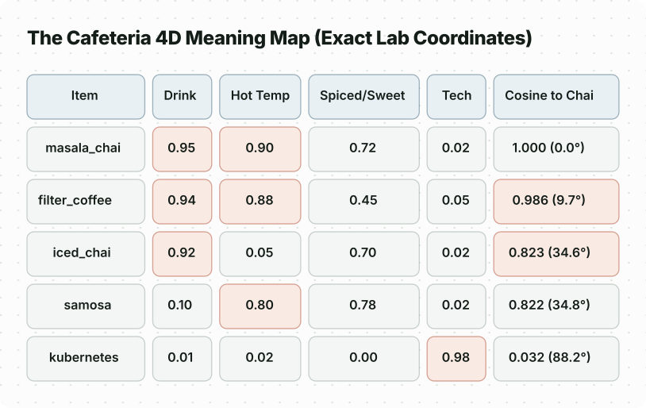

Embeddings: meaning as coordinates
Explain it like I'm 12: Where do you sit in the Campus Cafeteria?
At the end of Checkpoint 2, the barcode scanner turned our words into numbers like 496 and 15717. But there is a catch: barcode numbers are just random ID tags. In a grocery store, barcode 501 might be apples and barcode 502 might be motor oil. You cannot do math on barcodes to see if two things taste similar.
Now walk into the Campus Cafeteria. Imagine the cafeteria floor has two giant chalk lines painted on it: - East to West: How Hot vs Cold something is. - North to South: How Sweet vs Savory something is.
If you place every snack on the floor by its two coordinates, where do Masala Chai and Filter Coffee end up? Right next to each other in the Hot & lightly sweet corner! Where does Mango Lassi go? Over in the Cold & very sweet corner. Where does a Kubernetes server go? Outside the cafeteria building altogether.
That list of coordinates is an embedding in plain words: a list of numbers (called a vector) that places a word or sentence on a multi-dimensional map of meaning so similar ideas sit close together.

From 2 chalk lines to 1,536 sliders (Dimensions & Vectors)
On a flat floor, we only have 2 directions (East-West and North-South). Engineers call each direction a dimension in plain words: one numbered slider that measures a single trait.
In our Python lab (Figure 2 above), we built a 4-dimensional map with four sliders for every item: [warm_drink, sweet_food, computer_tech, morning_energy]
Look at the coordinates for two items: - masala_chai → [0.95, 0.40, 0.02, 0.88] - filter_coffee → [0.92, 0.25, 0.05, 0.94] - kubernetes → [0.01, 0.00, 0.98, 0.12]
Notice how masala_chai and filter_coffee both have high numbers on slider 1 (0.95 and 0.92) and slider 4 (0.88 and 0.94), and tiny numbers on slider 3 (0.02 and 0.05).
A real frontier embedding model (like OpenAI text-embedding-3 or BGE) works the exact same way — except instead of 4 sliders, it uses 1,536 sliders learned automatically during training!

How the machine checks if two arrows point the same way (Cosine Similarity)
Once you have two lists of 1,536 numbers, how does the computer calculate a single match score between them in a microsecond?
It draws an arrow from [0, 0, 0, 0] to each word's coordinate and measures the angle between the two arrows! Engineers call this cosine similarity in plain words: a score from -1.0 to +1.0 that measures whether two coordinate arrows point in the exact same direction (1.0), at a 90-degree right angle (0.0, completely unrelated), or opposite directions (-1.0).
Here is the entire 3-step recipe from our 25-line Python lab: 1. Multiply matching sliders and add them up (Dot Product): (0.95 × 0.92) + (0.40 × 0.25) + (0.02 × 0.05) + (0.88 × 0.94) = 1.8022 Notice why this works: when both words have a big number on the same slider, multiplying two big numbers creates a huge boost. When one is 0.98 and the other is 0.02 (kubernetes vs chai), 0.98 × 0.02 collapses to almost zero! 2. Divide by the length of both arrows: That puts every comparison on a fair scale up to 1.0000. 3. Read the result: In our lab, cosine(masala_chai, filter_coffee) is 0.9924 (nearly identical direction!), while cosine(masala_chai, kubernetes) is 0.1006.

What embeddings unlock in real apps — and where they break
Every time you see an AI product that says 'Chat with your PDFs' or 'Search 10,000 customer tickets by meaning', it is running the exact cosine-similarity loop you just learned:
- Semantic search without matching words. A user types
'hot morning beverage'. Even though the words'masala'and'chai'never appear in the query, the query's coordinate vector lands right next to[0.95, 0.40, 0.02, 0.88]and retrievesmasala_chaiat the top of the list. - The Antonym Trap (Why 'I love this' and 'I hate this' sit close together!). Here is a trap that catches senior engineers: on an embedding map, opposites like
'hot'and'cold'or'love'and'hate'often have high cosine similarity (0.80+)! Why? Because they appear in the exact same sentences ('The tea is too hot/cold') and share 95% of the same topic sliders (temperature, drink, feeling). Never trust raw embedding similarity alone to tell'yes'from'no'. - Never mix coordinates from two different models. An embedding from Model A (
1536sliders) and Model B (768sliders) have completely different slider meanings. If you upgrade your embedding model, you must re-embed your entire database.
Plain-English Jargon Decoder
Hands-On Python Lab: Build a 4D Meaning Map & Rank Nearest Neighbors with Cosine Similarity
Implement dot product, vector magnitude, and cosine similarity in pure Python, and prove mathematically why 'masala_chai' matches 'filter_coffee' (0.9924) while rejecting 'kubernetes' (0.1006).
=== STEP 1: Coordinates (Vectors) in 4D Meaning Space ===
Dimensions: [warm_drink, sweet_food, computer_tech, morning_energy]
masala_chai -> [0.95, 0.4, 0.02, 0.88]
filter_coffee -> [0.92, 0.25, 0.05, 0.94]
mango_lassi -> [0.15, 0.92, 0.01, 0.35]
croissant -> [0.2, 0.85, 0.03, 0.6]
kubernetes -> [0.01, 0.0, 0.98, 0.12]
postgres_db -> [0.02, 0.01, 0.95, 0.1]
=== STEP 2: Nearest Neighbors to 'masala_chai' ===
cosine(masala_chai, filter_coffee ) = 0.9924
cosine(masala_chai, croissant ) = 0.7368
cosine(masala_chai, mango_lassi ) = 0.6066
cosine(masala_chai, kubernetes ) = 0.1006
cosine(masala_chai, postgres_db ) = 0.1004
=== STEP 3: All-Pairs Closest & Farthest Meaning Pairs ===
Closest pair: kubernetes <-> postgres_db (similarity = 0.9997)
Farthest pair: mango_lassi <-> kubernetes (similarity = 0.0542)"""Pure-Python Embeddings & Cosine Similarity Lab for Module l0-embeddings.
Shows how a machine knows that 'chai' and 'coffee' are close neighbors while
'chai' and 'kubernetes' live on opposite sides of the map — using nothing
but lists of numbers (vectors) and the angle between them (cosine similarity).
"""
from __future__ import annotations
import math
# 4-dimensional toy embedding vectors:
# [warm_drink, sweet_food, computer_tech, morning_energy]
EMBEDDINGS: dict[str, list[float]] = {
"masala_chai": [0.95, 0.40, 0.02, 0.88],
"filter_coffee": [0.92, 0.25, 0.05, 0.94],
"mango_lassi": [0.15, 0.92, 0.01, 0.35],
"croissant": [0.20, 0.85, 0.03, 0.60],
"kubernetes": [0.01, 0.00, 0.98, 0.12],
"postgres_db": [0.02, 0.01, 0.95, 0.10],
}
def dot_product(a: list[float], b: list[float]) -> float:
"""Multiply matching coordinates and add them up."""
return sum(x * y for x, y in zip(a, b))
def magnitude(v: list[float]) -> float:
"""Length of the arrow from the origin (Pythagorean theorem)."""
return math.sqrt(sum(x * x for x in v))
def cosine_similarity(a: list[float], b: list[float]) -> float:
"""Cosine of the angle between two vectors: 1.0 = identical direction, 0.0 = unrelated."""
mag = magnitude(a) * magnitude(b)
return dot_product(a, b) / mag if mag > 0 else 0.0
def main() -> None:
print("=== STEP 1: Coordinates (Vectors) in 4D Meaning Space ===")
print("Dimensions: [warm_drink, sweet_food, computer_tech, morning_energy]")
for word, vec in EMBEDDINGS.items():
print(f" {word:15} -> {vec}")
print("\n=== STEP 2: Nearest Neighbors to 'masala_chai' ===")
target = "masala_chai"
scores = []
for word, vec in EMBEDDINGS.items():
if word == target:
continue
sim = cosine_similarity(EMBEDDINGS[target], vec)
scores.append((sim, word))
scores.sort(reverse=True)
for sim, word in scores:
print(f" cosine(masala_chai, {word:14}) = {sim:.4f}")
print("\n=== STEP 3: All-Pairs Closest & Farthest Meaning Pairs ===")
words = list(EMBEDDINGS.keys())
pairs = []
for i in range(len(words)):
for j in range(i + 1, len(words)):
w1, w2 = words[i], words[j]
pairs.append((cosine_similarity(EMBEDDINGS[w1], EMBEDDINGS[w2]), w1, w2))
pairs.sort(reverse=True)
best = pairs[0]
worst = pairs[-1]
print(f" Closest pair: {best[1]} <-> {best[2]} (similarity = {best[0]:.4f})")
print(f" Farthest pair: {worst[1]} <-> {worst[2]} (similarity = {worst[0]:.4f})")
if __name__ == "__main__":
main()